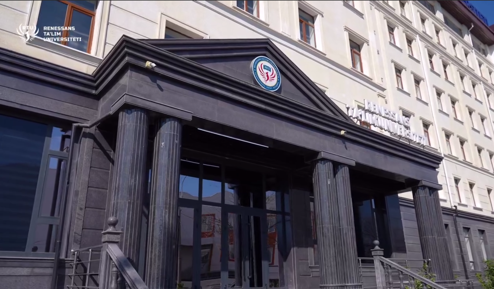

Madina -Mamatqulova , Sevinch Toshimova ,Nazokat Murotaliyeva, Rushana Rustamova va Madinaxon Siddiqova Xorijiy til va adabiyot yo'nalishi 3-4-bosqich talabalari , Navoiy nomli davlat stipendiyasini qol'lga kiritishdi
Charosxon Yo'ldasheva, Vahobiddin Xasanov Xorijiy til va adabiyot yo'nalishi 4-bosqich talabalari. Ular Islom Karimov nomli davlat stipendiyasini qo'lga kiritishdi
Fazliddin Egamnazarov Pedagogika fakulteti, Sport faoliyati yoʻnalishi 3-bosqich talabasi Pahlavon Mahmud nomli davlat stipendiyasi sohibinsovrindori hisoblanadi
